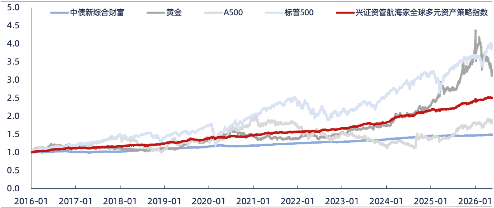
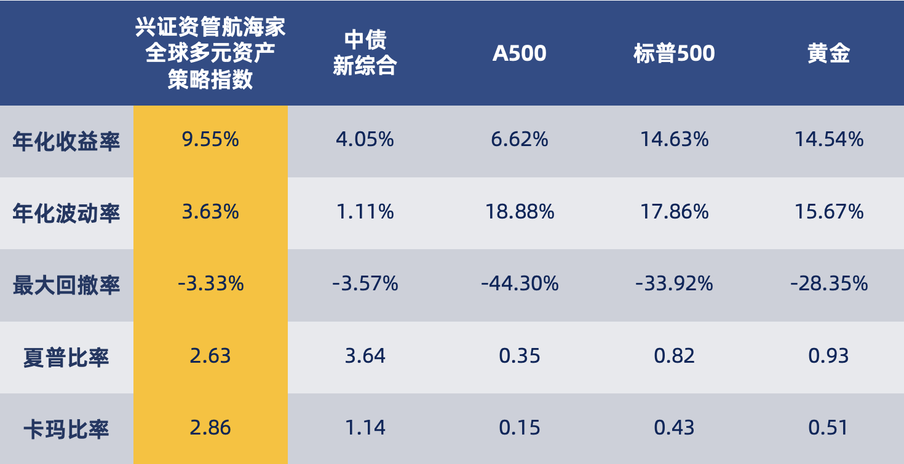
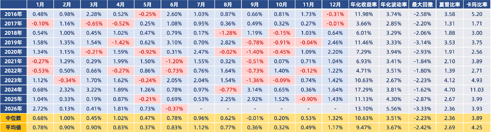
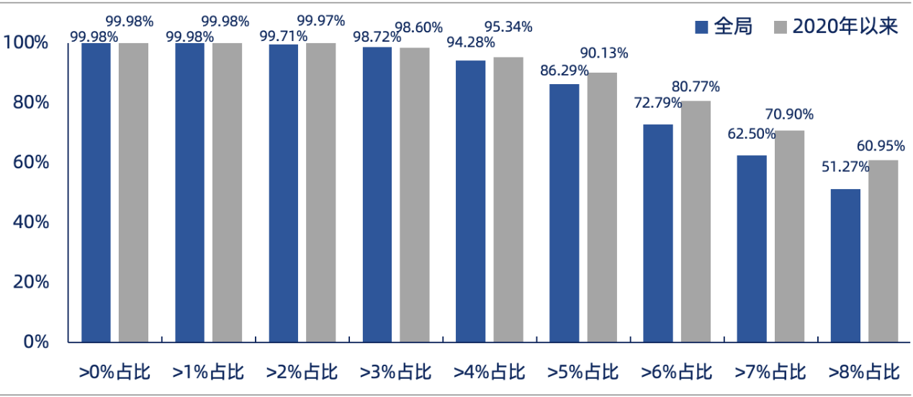
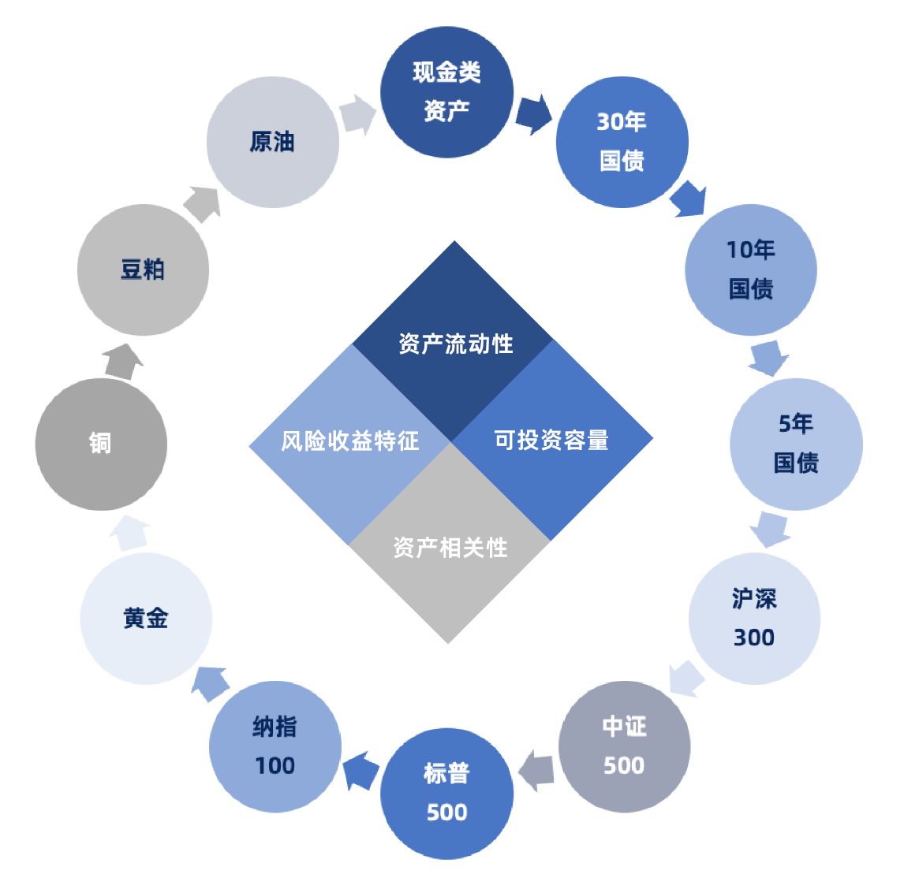

A股市场情绪监测
一张图看懂市场情绪、资金流向与动能结构
Signal Matrix
核心指标信号矩阵
| 指标大类 | 细分指标 | 当前分位 | 状态 | 信号说明 |
|---|---|---|---|---|
| 资金流向 | 融资资金 | 100% | 偏热 | 场内资金活跃度处于高位，短期交易热度较强。 |
| 外资资金成交额 | 99% | 偏热 | 外资成交参与度偏高，对市场流动性形成支撑。 | |
| 行业 ETF 净申购 | 23% | 偏冷 | 行业方向配置强度仍在低位，结构性分化明显。 | |
| 情绪预期 | 沪深300ETF隐含波动率 | 91% | 偏热 | 期权隐波走高，市场预期波动加大。 |
| 持仓 PCR | 45% | 中性 | 投资者结构变化尚未形成单边信号。 | |
| 市场动能 | MACD | 85% | 偏热 | 趋势动能较强，但需观察高位钝化风险。 |
| 乖离率 | 60% | 中性 | 指数偏离均线程度适中，尚未进入极端区间。 |
情绪处于中性偏热区间
综合资金流向、投资者预期与市场动能，当前市场情绪未进入极端高热，但部分资金和动能指标已经处于较高分位。
交易活跃度较强
融资资金和外资成交额分位偏高，说明市场参与度上升；行业 ETF 净申购仍偏弱，结构性机会更值得跟踪。
避免追高单一方向
当情绪继续上行并接近高热区间时，需要重点观察波动率、成交拥挤度和趋势动能是否同步转弱。
Overview
市场情绪与万得全A走势
Backtest
高热 / 低迷信号回测
Gauge
分项情绪仪表盘
History
历史分位查询
- 更新节奏
- 周度观点与月度观点
- 指标框架
- 宏观、通胀、利率、资金与市场情绪
- 模型输出
- 数据接入后展示方向、强度和结论说明
周度
本周结论
- 当前信号
- 待更新
- 场内建议
- --
- 场外建议
- --
- 业绩回溯
- --
月度
本月结论
- 当前信号
- 待更新
- 场内建议
- --
- 场外建议
- --
- 业绩回溯
- --
说明
结论说明
模型数据尚未接入。后续将在这里展示周度、月度信号的主要驱动因素，以及配置观点与风险提示。
折线数据待接入
Signal Matrix
黄金多周期信号矩阵
| 指标大类 | 细分指标 | 周度 | 上周周度 | 月度 | 上月月度 |
|---|---|---|---|---|---|
| 宏观环境 | 模块一 | 待更新 | 待更新 | 待更新 | 待更新 |
| 模块二 | 待更新 | 待更新 | 待更新 | 待更新 | |
| 资金与持仓 | 模块三 | 待更新 | 待更新 | 待更新 | 待更新 |
| 模块四 | 待更新 | 待更新 | 待更新 | 待更新 | |
| 估值与风险 | 模块五 | 待更新 | 待更新 | 待更新 | 待更新 |
| 模块六 | 待更新 | 待更新 | 待更新 | 待更新 | |
| 综合信号 | 模型汇总 | 待更新 | 待更新 | 待更新 | 待更新 |
数据接入后展示对应指标的模型结论与变化。
数据接入后展示对应指标的模型结论与变化。
数据接入后展示对应指标的模型结论与变化。
数据接入后展示对应指标的模型结论与变化。
数据接入后展示对应指标的模型结论与变化。
模型信号、配置建议与风险提示将在这里汇总。
Gold Volatility
黄金隐含波动率与信号
数据来源：Wind，兴证资管
Macro Research
国内宏观经济监测
增长、生产、价格与信用条件 数据读取中正在载入宏观图表数据...
Fixed Income
固定收益研究
研究框架已建立，内容待接入。模块一
内容待接入
模块二
内容待接入
模块三
内容待接入
Equity Research
权益研究
研究框架已建立，内容待接入。模块一
内容待接入
模块二
内容待接入
模块三
内容待接入
CISC VOYAGER GLOBAL MULTI-ASSET STRATEGIC INDEX
兴证资管航海家全球多元资产策略指数
以全天候思想理念和风险平价工具为基础，用规则化的多资产配置框架应对不同经济周期。
OVERVIEW
始于预测，终于应对
2026年6月22日，兴业证券集团旗下兴证资管正式发布“航海家”系列全球多元资产策略指数家族，首位成员——兴证资管航海家全球多元资产策略指数（CISC Voyager Global Multi-Asset Strategic Index）同步登陆万得（Wind）平台。
“航海家”系列秉承“始于预测，终于应对”的投资哲学，在全天候思想理念和风险平价工具的基础上迭代优化。策略指数模型综合分析宏观风险和趋势变量等因素，并内嵌动态整体控波和组合细分止损机制。
指数投资范围涵盖境内外权益、固定收益、货币（贵金属）和大宗商品等多元资产，通过策略模型动态配置，以有效应对不同经济周期变化。
- 基日
- 2016-01-28
- 年化收益
- 9.55%
- 年化波动
- 3.63%
- 最大回撤
- -3.33%
- 夏普比率
- 2.63
- 卡玛比率
- 2.86
统计区间：2016-01-28 至 2026-06-18。历史表现不代表未来表现。
PERFORMANCE
风险收益表现
基日以来，策略指数在收益率、波动率和回撤控制之间取得了相对均衡的表现。

数据来源：Wind，兴证资管

数据来源：Wind，兴证资管
2026 年以来
截至2026年6月18日，绝对收益5.51%，年化收益13.10%，年化波动5.56%，最大回撤-3.33%，夏普比率2.36，卡玛比率3.93。

数据来源：Wind，兴证资管
长期配置视角
基日以来任一时间点持有指数一年，达到正收益的概率为99.98%，并且收益大于4%的概率达94.2%以上。

数据来源：Wind，兴证资管
01 / BACKGROUND
“航海家”策略指数推出背景
当前全球宏观格局深度重构，地缘博弈与外部冲击趋于常态，单一资产或传统的资产配置方式难以兼顾理想收益、稳健风控和优质体验。贸易失衡和冲突带来的通胀压力，以及地缘政治变化等事件频发，可能引发阶段性流动性冲击，导致全球大类资产相关性走高。
在多重约束下，资产配置思路从资产简单分散转向更低相关性的驱动因素分散，从资产趋势预测转向对市场未来不确定性的应对，从资产静态配置转向情景动态应对。
“航海家”策略指数家族基于量化模型，将各类资产的风险因子进行系统性拆分、定价和重组。在严格控制因子间相关性的同时，将风险均衡配置于不同经济周期，力求提升组合跨周期适配能力。
策略模型以确定性的应对框架直面不确定性的市场变化，并嵌入动态止盈和止损机制，力求缓释市场尾部风险，平抑组合波动幅度，收窄阶段回撤空间。
02 / METHODOLOGY
策略指数构建原理
QIS策略指数（Quantitative Investment Strategy）通过数据驱动和规则化算法，将多资产配置、风险溢价、趋势信号、波动率特征等投资逻辑转化为可执行、可复现的策略体系，具有“规则可显化、风险可识别、表现可跟踪”的特点。
兴证资管“航海家”系列以QIS策略指数为载体，将多年研发形成的多元资产配置能力转化为标准、透明和规范的解决方案。指数按照既定规则运行，调仓机制和风险控制框架相对清晰，策略执行强调纪律性和一致性。
在资产选择方面，CVOYA.WI覆盖中国和海外权益、中国固定收益和中国大宗商品四大核心资产类别，重点考量资产流动性、可投资容量、风险收益特征和资产相关性。
在指数策略构建方面，CVOYA.WI围绕资产波动、趋势运行和相关性变化等核心要素进行建模，并在组合层面内嵌动态调控与细分止损机制。指数通过多类资产的差异化表现实现分散互补，在规则化框架下提升组合对不同市场环境的适应能力。
资料来源：兴证资管

资料来源：兴证资管
指数以全天候思想理念和风险平价工具为基础，结合长短期动量、波动率、相关性及宏观场景识别等信号，动态测算并调整各类资产权重，力争把复杂的多资产配置能力转化为可跟踪、可解释、可产品化的系统化工具。
03 / APPLICATION
QIS策略指数的运用方式
目前符合适当性要求的投资者可通过以下业务形式参与QIS策略指数：
资产管理产品
体现策略指数表现的资管计划、公募基金等产品
场外衍生品
挂钩策略指数的场外期权等衍生品交易
总收益互换
挂钩策略指数的TRS业务
收益凭证
挂钩策略指数的收益凭证产品
结构化投资
固定收益与TRS相结合，或固定收益与场外期权相结合。
线性直投底层资产
底层直投ETF、底层直投期货，或ETF与期货相结合。
COMPLIANCE 风险揭示和免责声明 展开阅读
重要提示
本材料仅供兴证证券资产管理有限公司（简称“本公司”或“本管理人”）与投资者进行交流探讨之用，不构成任何广告或宣传推介。本公司不会因接收人收到本材料而视其为本公司的当然客户，特定产品的资管合同为确定投资者与本公司间权利义务的唯一法律安排，投资者仅在认真阅读并签署特定资管产品合同、交付资金并获得份额确认的前提下方成为本公司的客户。
本材料提示的风险不足以揭示实际交易中可能遇到的全部风险，投资者可能会承受本材料所提示的风险以外的其他风险。如果投资者不理解交易风险，或者不愿意承担全部的交易风险或损失，投资者不应当开展相关交易。
投资者应当知悉，本公司不对交易的预期结果进行承诺或保证。投资者须仔细阅读本材料并在充分评估自身特定需求、目标及财务状况、风险承受能力的基础上考虑相关交易决策是否适宜。在决定是否从事相关交易前，投资者可以向独立第三方寻求专家咨询意见，并应自行就交易进行数据搜集及研究。
为保护自身权益，请投资者在参与投资前，对相关规则、惯例、知识有充分的了解，确保在理解相关风险类型的基础上，能够识别并充分评估此等风险可能给自身带来的任何损失。
为切实保护投资者的权益，本公司基于投资者适当性管理要求，需要对投资者进行风险承受能力评估，但并不能取代投资者的自行判断，也不会降低交易的固有风险，也不会影响投资者依法应当承担的投资风险、履约责任以及费用。同时，本公司履行投资者适当性管理职责不能取代投资者本身或其投资顾问的投资判断，投资者不得以交易存续期间其不符合相关适当性标准为由拒绝承担交易结果。
投资者不应当进行任何交易或参与资管产品投资，除非投资者对交易或资管业务有完全理解，包括但不限于：本公司与投资者的身份及权利义务；资管业务性质以及与资管业务、证券交易有关的市场状况；开展与终止此等资管业务的条款与条件；相关财务与经济风险敞口；以及税费、会计、合规与监管问题。
投资者在交易开展前应认真阅读并充分理解交易相关的全部法律文件，包括但不限于资产管理合同、计划说明书等，以清楚知悉投资者所享有的权利和应承担的义务，并确保有能力承受可能因签署和履行相关法律文件所引起的全部风险。
投资者应当知悉，本公司是资管产品的管理人，而不是投资者的投资顾问。本声明的内容不得被视为本公司为投资者提供的任何投资建议、财务咨询、产品推荐或交易担保。投资者须独自承担监控投资或交易情况的责任，所有可能的交易风险及损失由投资者自行承担。
本材料中的标题仅为方便检索而设，不作为对本材料内容的解释，也不以任何方式影响本材料的规定。如本材料包含一项建议，该建议仅为一般性建议，并未考虑投资者的特定交易目标、财务状况、风险承受能力或特别的避险需求。如相关内容与投资者和本公司签署的交易协议或其他法律文件不一致，以正式签署的法律文件约定为准。
主要风险说明
政策风险：因国家宏观政策发生变化，导致市场价格波动而产生风险。
经济周期风险：经济运行的周期性变化可能引起股票、债券价格及收益水平变化。
利率风险：金融市场利率波动会影响固定收益证券的价格、收益率以及企业融资成本和利润。
上市公司经营风险：上市公司的管理能力、财务状况、市场前景、行业竞争等因素可能导致盈利和股票价格变化。
信用风险：债券发行人或交易对手可能发生违约，或因信用质量降低导致证券价格下降。
可转换债券及可交换债券投资风险：包括但不限于收益不确定、转股或换股、偿付、资信、质押担保、回售集中兑付、流动性及周期性风险。
购买力风险：产品投资收益可能受到通货膨胀影响，导致实际购买力下降。
再投资风险：当利率下降时，固定收益证券所得利息收入再投资可能获得较低收益率。
法律和合规风险：法律法规、监管要求或市场规则变化，可能导致交易法律制度不明确、交易不受法律保护、协议无效或不可执行。
汇率风险：涉及不同货币币种的交易将承担货币价值或价格波动风险。
操作风险：交易人员、场所、清算机构的操作失误、违反流程或内部控制系统不完善，可能导致损失。
不可抗力风险：自然灾害、战争、公共卫生事件、政府行为、通讯失败、政策法规修改或监管要求调整等不可抗力事件可能影响交易正常进行。
交易费用：净损益可能受到销售费用、产品管理费、业绩报酬、托管费、投资交易费用及税收等影响。
风险管理机制：机构投资者应建立内部风险管理机制，重大决策应符合内部治理文件规定并取得有权机构或人员批准。
合法性、真实性及授权：投资者应确保签署及履行法律文件符合监管要求，所提供资料真实、准确、完整，并具备必要的签署、履约和资金权利。
与模拟历史数据的对比：历史表现或样本表现可能取自通常认为可信但未经本公司独立确认的来源，模拟表现与实际结果之间可能存在巨大差别。
免责声明
如本材料的信息来源于已公开的资料，本公司对该等信息的准确性、完整性或可靠性不作任何保证。本材料仅体现本公司基于目前可得信息和业务情况的分析推论，不属于证券研究报告范畴，相关判断可能随后续市场变化而变化。
本材料涉及的板块、策略分析、个股分析仅为方便展示之用，不表明投资团队对相关标的投资价值或一定盈利的保证。过往表现不应作为预测日后表现的依据，本公司不保证本材料所含信息保持在最新状态。
市场有风险，投资需谨慎。本材料中所指的投资、交易、产品及服务可能不适合个别投资者，不构成对投资者私人的咨询建议。投资者不应将本材料作为投资决策的唯一参考依据，所有可能的交易风险及损失由投资者自行承担。
投资者及其相关方应当遵守廉洁从业规范，严格遵守法律法规、中国证监会规定和行业自律规则，公平竞争、合规经营、忠实勤勉、诚实守信。
本材料版权仅为本公司所有，未经本公司书面许可，任何机构和个人不得对本材料内的全部或部分信息以任何形式进行翻版、复制、发表、引用或泄露给任何第三方。
若本公司以外的其他机构发送本材料，由该机构独自为此发送行为负责。通过此途径获得本材料的收件人，应对本材料进行保密处理并及时通知本公司。